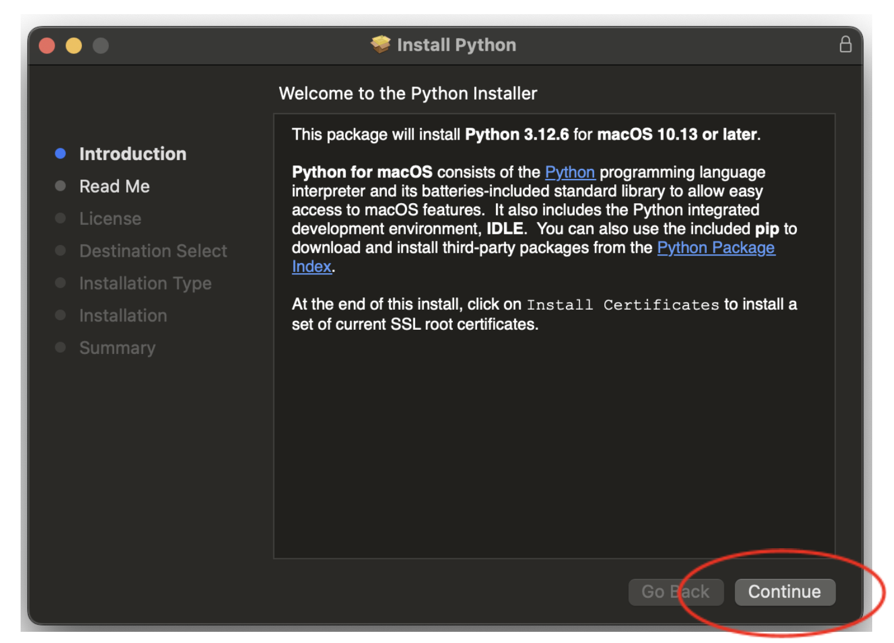

Download & Install
The program will run you through the steps to process your data through a variety of tests. More information for setting up your CSV file can be found in Data Preparation, and information explaining the tests can be found in List of Tests.
Python Module Version
For the convenience of our users, an open source version of the program is available for download here. This version can be run through a Python language interpreter and allow users more control and customization to their tests.
Follow the instructions below to learn how to install a Python Language Interpreter and the open source files.
This user interface relies on Python script. If you have not done so already, you will first need to download the Python language interpreter from Python.org in order to run our user interface. If you have already downloaded the Python language interpreter to your machine, you may skip this step.
- Navigate to the download tab of the Python.org website.
-
Click to download the relevant Python language interpreter for your operating system.

- Open the .pkg file that downloads to your machine. You will be prompted to accept installation of the Python language interpreter.  Installing the Python language interpreter will take up several hundred megabytes of space on your computer.
- Save the Python folder into a place in your computer where it won’t be accidentally deleted, such as your documents folder.
Now that you have downloaded the Python language interpreter, you are ready to install the CIB Mango Tree user interface!